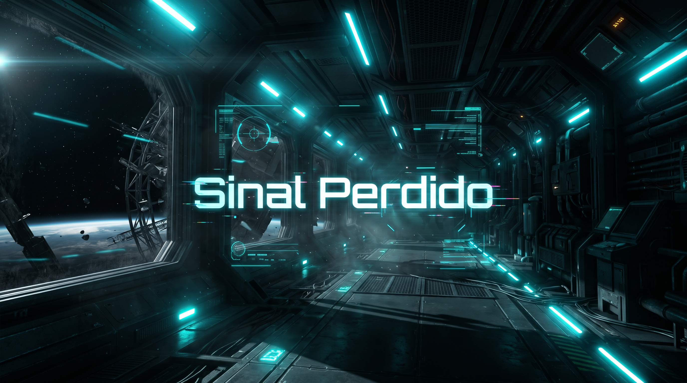

Sinal Perdido

Você é a engenheira de manutenção da Estação Orbital Kepler-7. Ao sair da câmara de hibernação, descobre que a estação foi evacuada às pressas, opera em modo de energia mínima e o suporte de oxigênio está caindo rapidamente.
Explore os módulos Laboratório, Engenharia e Comunicações, reúna o equipamento essencial e transmita um pedido de socorro na frequência correta antes que o ar acabe.